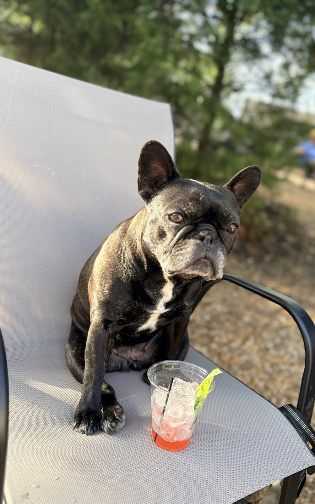
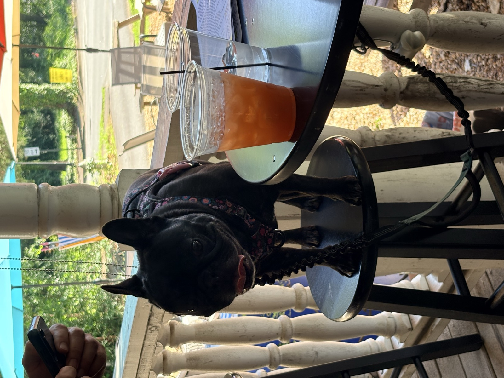
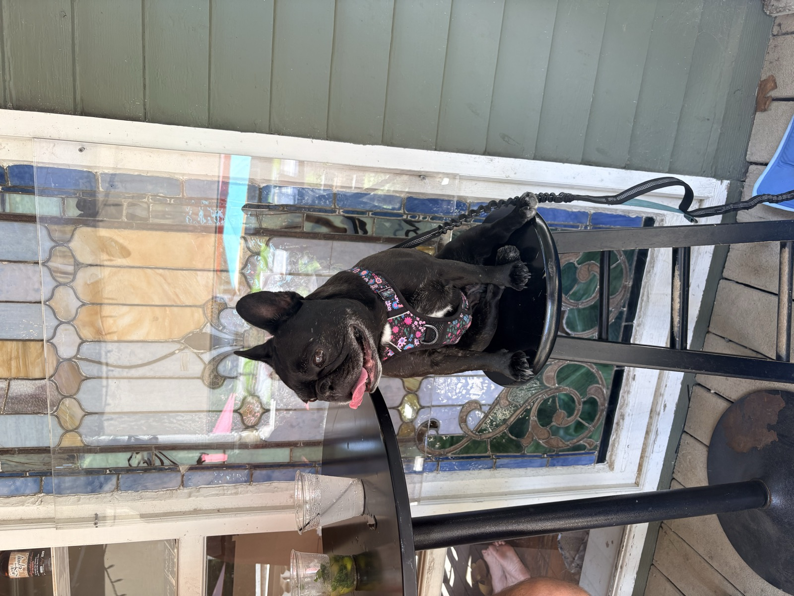

"Great drinks, a cool vibe, and a pup-friendly atmosphere? What more could a dog ask for?"
Hey there, fellow fur-friends and humans! So, my humans and I decided to shake things up a bit and diverge from our usual brewery hopping to check out this place called Lazy Guy Distillery in downtown Kennesaw. Let me tell you, it's located in a super cool building from the 1800s that just oozes character! The patio vibe is pawsitively delightful, and I could tell right away that this was going to be a fun outing.
Now, for all my fellow pups out there, you'll be happy to know that Lazy Guy has thought of us too! They've got these awesome river stones that are perfect for cooling off on a hot day—trust me, I can attest to their effectiveness! Plus, Tracy, our lovely server, was an absolute gem. She brought me an ice-cold water bowl, some tasty treats, and even threw in a belly rub! Talk about a five-paw experience!
As for my humans, they tried two cocktails that had them doing a little happy dance: a pumpkin spice mule and a habanero honey mule. It's clear that the folks at Lazy Guy have some serious experience when it comes to concocting craft cocktails!
Oh, and if you're curious about how they make all this magic happen, they offer tours on a limited basis. Just keep an eye on their Instagram and Facebook for updates! If you take a quick peek in the back, you'll see they've got quite the setup going on—definitely worth a look!
So, if you're in the area and looking for a fun spot to chill with your humans, I highly recommend Lazy Guy Distillery. Great drinks, a cool vibe, and a pup-friendly atmosphere? What more could a dog ask for? Until next time, keep those tails (or butts) wagging! 🐾🍹


